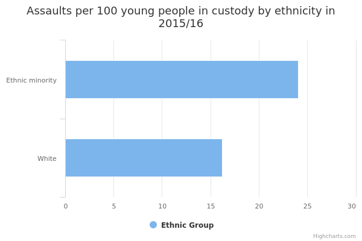

Young people involved in assaults in custody
The main facts and figures show that:
-
in 2015/16, the rate of assaults by young people from Other ethnic groups in custody was about 1.5 times the rate for White young people in custody
-
there were about 24 assaults per 100 young people from Other ethnic groups in custody per month in 2015/16
-
there were about 16 assaults per 100 White young people in custody per month in 2015/16
Things you need to know
Each young person involved in an incident is counted, so a single incident can be counted multiple times. Individuals are often involved in more than 1 incident, so they can be included in the data more than once. This means that the rate per 100 young people in custody per month averaged across the year should be considered with some caution.
The data doesn’t record a variety of measures that would be needed for a detailed analysis of assaults by youths in custody. It doesn’t indicate if an incident involved people of the same or different ethnicities, for example, or whether one individual was involved in multiple incidents. The data only breaks down assault rates by ethnicity, and therefore should be used for a general, high-level assessment of the issue.
Estimates based on a larger number of respondents are generally more reliable. Therefore, the smaller numbers of respondents from ethnic minority backgrounds mean that estimates for these groups are less reliable than estimates for White people.
What the data measures
This data gives rates of assaults involving young people in custody by ethnicity. Each incident a young person in custody is involved in is counted and the ethnicity of each assailant recorded. Rates are expressed per 100 young people in custody per month (on average across the financial year) from 2010/11 to 2015/16.
‘Young person’ and ‘youth’ refers to anyone between the ages of 10 and 17.
The data doesn’t include assaults on staff or visitors.
The data is taken from the Youth Justice Board for England and Wales (YJB) publication of Youth Justice annual statistics.
Why these ethnic categories were chosen
The ethnicity of youths in custody is presented in 2 categories:
- White, which includes White British and White other groups
- Other, which includes all other ethnic minorities
Assaults involving young people in custody by ethnicity

| White | 16.2 | 766.4 | 124.3 |
|---|---|---|---|
| Other | 24.1 | 524.0 | 126.3 |
Summary
This data shows that:
-
there were about 24 assaults per 100 young people from Other ethnic groups in custody per month in 2015/16
-
there were about 16 assaults per 100 White young people in custody per month in 2015/16
Download image and data
Methodology and type of data
Type of data
Administrative
Purpose of data source
Admin data used for internal management information
Methodology
Ethnicity self-reported and recorded on administrative systems by staff based on self-report of offenders. As with all large administrative data sources, some inherent inaccuracy may exist.
The prison population is based on the number of young people in custody at the beginning of the month plus new admissions during the month. This is then averaged over the year and used to calculate the rate of assaults.
Ethnicity figures do not include data where ethnicity is unknown.
Rounding
Rates per 100; rounded to 1 decimal point in source data; rounded to nearest percentile in commentary
Related publications
Data source details
Source
Youth Justice Statistics Supplementary Table 8.15
Department
Youth Justice Board for England and Wales
Publication frequency
Annual
Download the data
assaults-in-custody-young-people.csv
This file contains the following: ethnicity, year, value, denominator, numerator